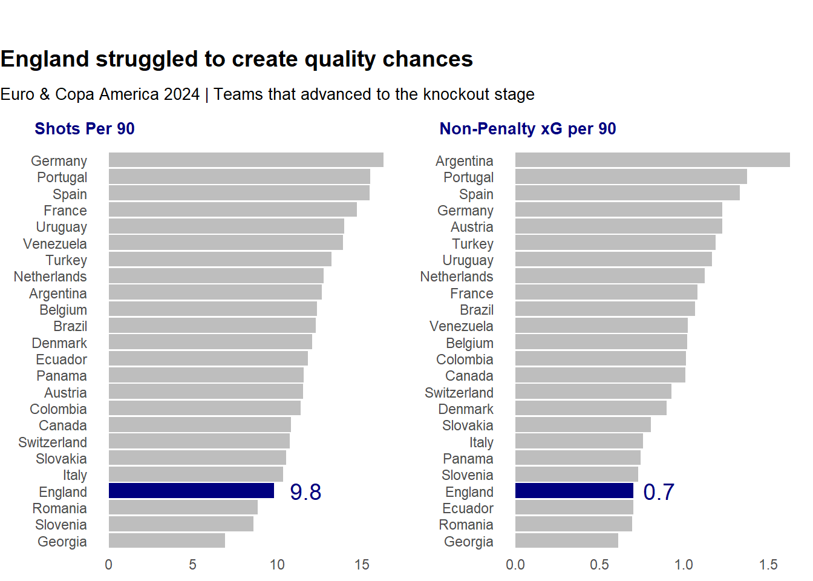
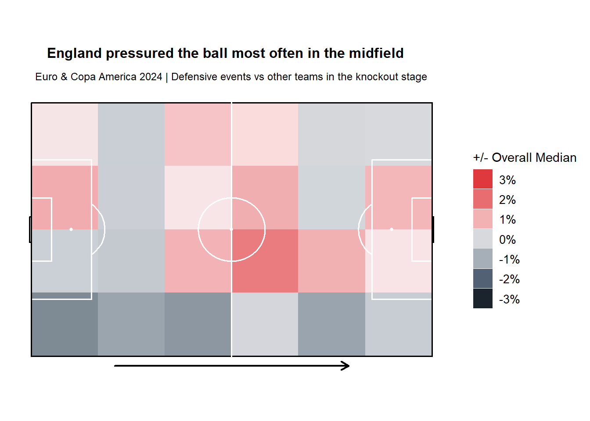
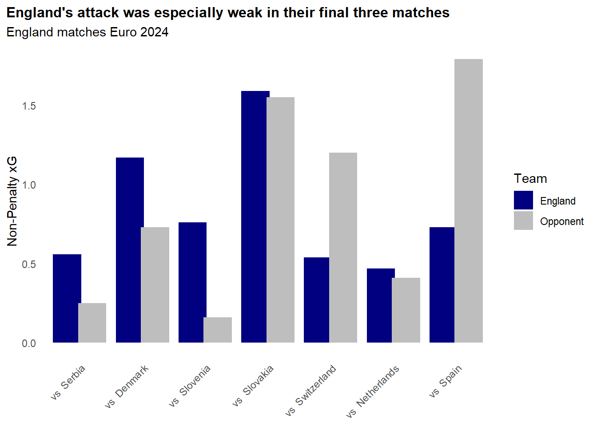
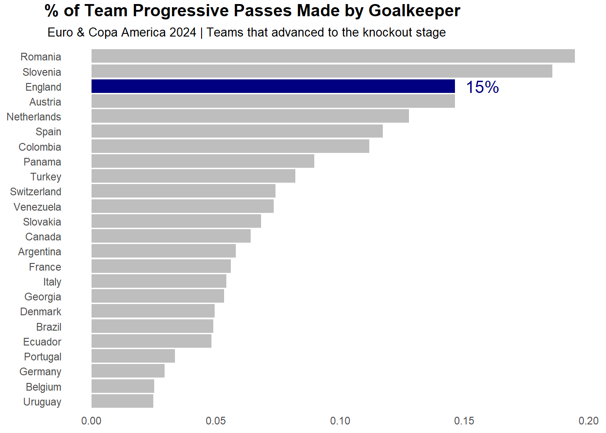
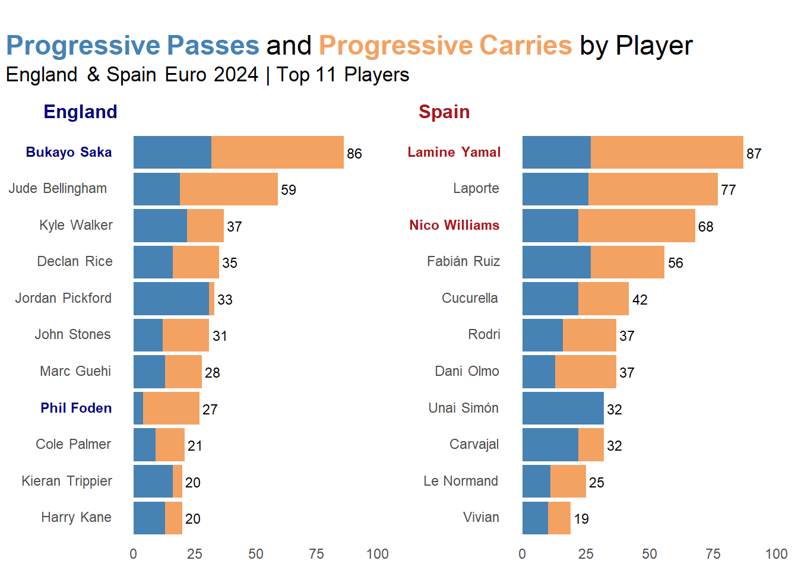
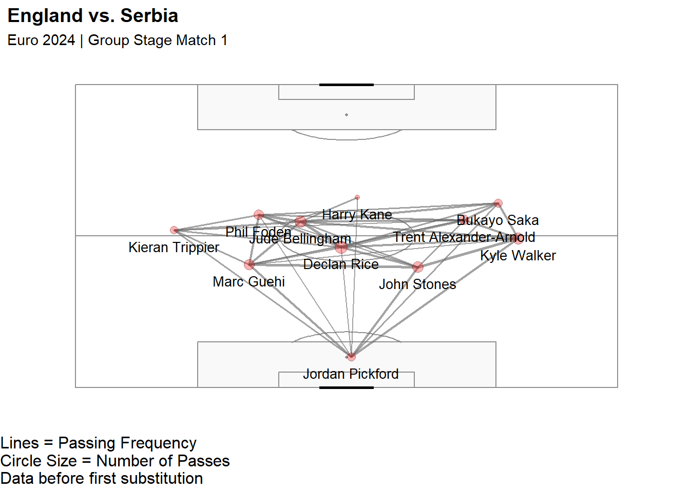
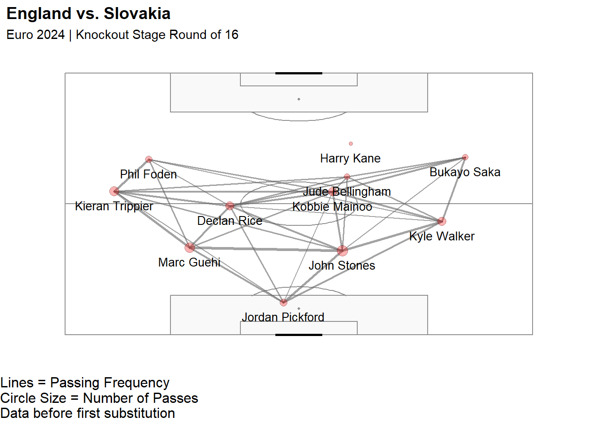
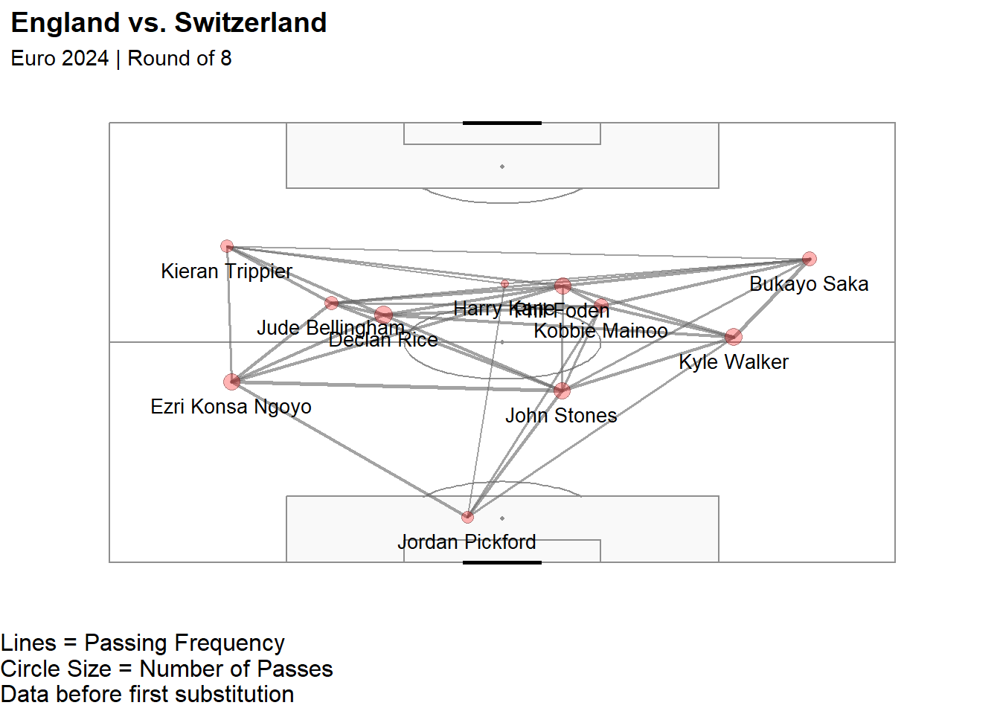

Gareth Southgate brought England to the Final in Euro 2024 – but they are right to find a new approach to winning the World Cup in 2026.
Having not won a major trophy since 1966, England was the favorite entering Euro 2024. Just days before England’s opening match against Serbia, Sports Betting Dime listed England at +299 to win the Euro.
They were favorites because of their attacking talent. Phil Foden had just won Premier League Player of the Season, Jude Bellingham led Real Madrid to Champions League glory in his first season with the club, Harry Kane led the Bundesliga in scoring, and everyone was comparing Bukayo Saka to Mohamed Salah (and by everyone I mean me). This was truly a golden generation and a chance for England to win a major trophy.
But when the tournament began, England’s attack was lackluster and inefficient. Why?
I explored this question by comparing England’s Euro 2024 performance to the other 15 teams that advanced to the knockout stage and to the eight teams who advanced to the knockout stage in Copa America 2024. All data used for this analysis came from StatsBomb public data.
In terms of non-penalty expected goals (xG) and shots per 90, England ranked near the bottom.
So let’s try to answer why, despite their wealth of attacking talent, England struggled to create chances and score goals.
England’s Defensive Approach
Gareth Southgate was a defensively-minded coach, and the argument can be made that England’s low attacking output was a worthwhile trade-off for defensive solidity. Although England did press centrally at times, they primarily defended in a mid-block, prioritizing staying compact in the midfield.

Southgate’s approach likely drew inspiration from France’s success in the World Cup in 2018 and the Euro in 2022. While I do not necessarily disagree with this tactic, England still lacked creativity and shape in attack when they did have possession. This was especially true against good to great opposition. In their final three games against the best opposition faced in the tournament, England’s chance creation was especially poor.

So even with their defensive solidity, they did not create enough quality chances to truly compete against the best teams. That said, let’s take a closer look at how England did progress the ball forward.
Playing Long
Progressive metrics are counting metrics that help identify players who are proactive in pushing the ball forward. Following the definition laid out by John Muller from The Athletic, a progressive pass is a completed pass that is at least 10 meters (11 yards) long and moves the ball at least 25% of the remaining distance to goal.
What is interesting about England’s progressive passes is that 15% of them came from their goalkeeper, Jordan Pickford.

Among teams that progressed to the knockout stage in the Euros and Copa América, this ranked behind only Romania and Slovenia. While Route 1 can be effective in certain situations, it’s not a strategy many of England’s players are accustomed to and not one that is likely to yield consistent success against top sides.
Another useful progressive metric for evaluating a player’s attacking prowess is progressive carries. A progressive carry is an open-play carry at least 10 meters (11 yards) long that moves the ball at least 15% of the remaining distance to goal.
England lagged behind other elite international sides in progressive passing and progressive carries. For example, let’s compare England to Euro 2024 champions, Spain.

Spain totaled 228 progressive passes compared to England’s 187, and 284 progressive carries compared to England’s 210.
What stands out first is England’s inability to get one of their most creative players, Phil Foden, into positions where he could make his mark on the match. Foden recorded only four progressive passes the entire tournament.
In contrast, Spain consistently fed the ball to their dynamic wide players, Lamine Yamal and Nico Williams. Aymeric Laporte recorded more than twice as many progressive passes and carries as England’s two center-backs, Stones and Guehi, combined. This illustrates Spain’s commitment to something England did not do: effectively build up from the back. Laporte set the tempo for Spain, and their organized structure created space for their two dynamic wingers to take on defenders, play line-breaking passes, and create goal scoring opportunities.
It is also worth noting that Spain did not sacrifice defensive solidity for their outstanding progressive metrics. They still conceeded slightly less non-penalty xG per 90 than England did throughout the tournament (0.74 vs 0.71).
Spacing
Another potential explanation for England’s low progressive numbers was their spacing, or lack thereof, in possession. For Manchester City in the 23-24 season, Phil Foden naturally drifted into central areas, where he was often able to pick up the ball in space, then sprint forward with the ball at back-pedaling defenders. Foden did a similar thing with England early on in the tournament, but it often led to Foden and Jude Bellingham occupying very similar zones. For example, in England’s first match against Serbia, Foden and Bellingham had an almost identical average pass location. The two play-makers were in each other’s way, and this made England much easier to defend.

After trying Alexander-Arnold and Connor Gallagher at right 8 and getting similar results in the next two group stage matches, England changed their midfield formation against Slovakia in their first knockout match. Instead of playing Declan Rice as a single pivot, Southgate changed to a midfield double pivot with Rice and Kobbie Mainoo.

Although this was successful in creating more space and better passing triangles, with Foden staying wide and Rice linking play, Harry Kane struggled to get involved. For the entire match, Kane had only seven receptions and four passes, never combining with the same player more than twice.
Against Switzerland, Kane’s passing network show that he tried to get more involved. Kane is great because he can drop deep and create, which is what he tried to do against Switerland. However, similar to Foden creating congestion by doing what he does best, Kane further congested space and muddled up passing networks.

Kane has been England’s captain for years and was probably undroppable in Southgate’s view. However, his tendency to drop in, link play, and serve as a creator seem to be redundant for England. Ollie Watkins may have been the better option, as someone who is more direct and can run in behind. A player of Watkins profile could open up space for Foden to operate in attacking midfield positions, and record more progressive carries in the attacking third.
Corner Kick Production
Finally, England scored zero goals from corners. On their roster, they had Declan Rice and Bukayo Saka, who both took corners for Arsenal in the 2023/2024 season. That year, Arsenal scored 16 goals from corners, matching the single-season Premier League record. But for England, both players combined took a total of zero corner kicks. By simply not putting the best deliverers of the ball to take in-swinging corners, Southgate passed up on creating better goal scoring opportunities.
USA Basketball 2004?
Maybe this is a stretch, but England’s performance at Euro 2024 feels a lot like USA Basketball’s bronze medal run at the 2004 Olympics. Both squads were loaded with stars, but neither team found the cohesion necessary to succeed as a unit.
In 2008, Coach K led his first USA Olympic team. The roster still featured major stars like LeBron James, Dwyane Wade, and Carmelo Anthony, but it also included role players who served as specialists. Instead of ball-dominant Allen Iverson, Coach K brought in veteran point guard Jason Kidd. Rather than including Shawn Marion, whose skill set overlapped with Carmelo and LeBron, he opted for a TayShaun Prince, a defensive specialist. And while Michael Redd’s NBA 2K rating may have been much lower than Joe Johnson’s, he was a more effective spot-up shooter and filled a clearer need for the team.
Perhaps Thomas Tuchel should take a page out of Coach K’s playbook for the 2026 World Cup, starting with Harry Kane. Given the rest of England’s attacking options, Kane’s skill set may be redundant. A more direct striker who runs in behind could better complement the team’s creative midfielders. Ollie Watkins fits that profile and arguably should have started over Kane during Euro 2024. His style of play could have created more space for central playmakers like Jude Bellingham to operate.
Similarly, instead of shoehorning Phil Foden into the same space as Bellingham, why not deploy someone with pace and verticality alongside him? Anthony Gordon fits the bill.
If England want to finally translate their golden generation into glory, they’ll need to think less like a fantasy team and more like a team with purpose. Coach K did it in 2008. Maybe England can do it in 2026.